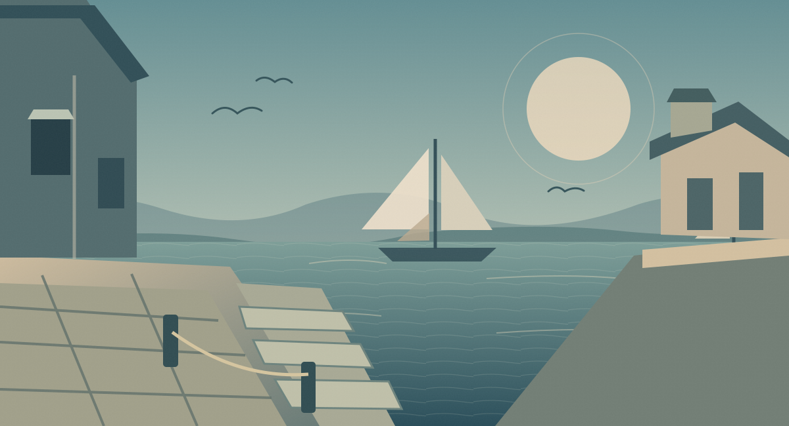

✦
≋
A WORLD IN THE WAKE OF RUIN
ISIDRIS
After the Drowning
THE FIRST YEARS OF EXILE
↺ New game
◆
THE WORLD
TURN 001
/
OUTER ISLES

CHAPTER I · THE SHORE
✧
CURRENT LOCATION
The Salt Steps
❖
What will you do?